Research Infrastructure#
The infrastructure workstream team adopted an iterative approach to modernize the CMVP supporting infrastructure. Each iteration introduced progressively advanced architectures, leveraging cloud-native services to improve scalability, portability, deployment speed, and security, all while ensuring cost efficiency. The modernization efforts have resulted in a containerized application that has been successfully deployed on the Amazon Elastic Container Service (ECS) and Amazon Elastic Kubernetes Service (EKS) platforms. The final iteration features Amazon EKS leveraging Bottlerocket Amazon Machine Images (AMIs) with FIPS 140-3 compliance enabled.
Furthermore, the modernized architecture integrates a managed database service to enhance operational efficiency and features a fully automated CI/CD pipeline to simplify and streamline server deployments on a Linux platform. Authentication mechanisms have been modernized to incorporate cloud-native solutions, including the AWS Network Load Balancer (NLB).
Research Infrastructure Workstream Collaborators#
The Research Infrastructure Workstream is led by Raoul Gabiam of The MITRE Corporation and Douglas Boldt of Amazon, with contributions from Courtney Maatta, Annie Cimack, Diana Brooks, Charlotte Fondren, Zhuo-Wei Lee, Keonna Parrish, Abhishek Isireddy, Abi Adenuga, Bradley Wyman, Brittany Robinson, Gina McFarland, Damian Zell, Cavan Slaughter, Rayette Toles-Abdullah, Keith Hodo, John Dwyer, Ahmed Virani, Daftari Mrunal, Kasireddi Srikar Reddy, Srujana Alajangi, and Natti Swaminathan of Amazon; Robert Staples and Murugiah Souppaya of NIST; Jason Arnold of HII; Michael Dimond, Kyle Vitale, Phillip Millwee, and Josh Klosterman of the MITRE Corporation; and John Booton, Aaron Cook, and Jeffrey LaClair of ITC Federal.
Modernization Approach#
The existing CMVP production environment was initially deployed in a data center internal to NIST. A subset of the environment that was providing services to the test labs was virtualized and migrated to AWS GovCloud to take advantage of the high availability and resiliency offered by cloud infrastructure. The CMVP system administrators have maintained the AWS infrastructure for several years.
The modernization journey started with a complete inventory and understanding of the existing production environment in AWS, including all the virtualized assets, the network, data flows, functionalities, and dependencies. Once the existing architecture was fully documented, it was replicated in a research environment managed by the NCCoE team to establish an initial baseline that could be analyzed, and opportunities were identified to incrementally modernize the application and supporting infrastructure throughout the lifecycle of this project. The NCCoE research is performed in AWS to ensure the findings can be easily replicated in the production environment. The objective is to deliver the new capabilities required at the application level to support the Protocol Workstream while maintaining some compatibility with the existing production environment.
Replication of the Legacy Production CMVP Environment#
This section gives historical context to the ACMVP application. The production CMVP AWS environment was replicated to the current ACMVP research environment, which set a baseline from which modernization opportunities were identified.
Figure 2 represents the baseline architecture present in the research environment before modernization efforts.
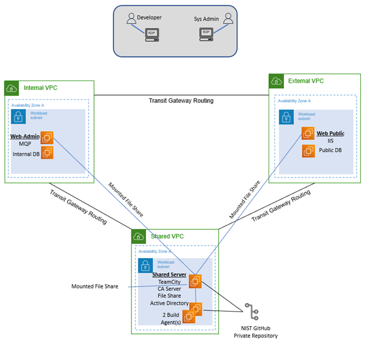
Figure 2 Legacy System Architecture Diagram#
The External Amazon Virtual Private Cloud (VPC) handles any public-facing applications and utilities, including the WebPublic application (sitting underneath Microsoft IIS) and the public database. These services are split into two separate Amazon EC2 instances.
The Internal Amazon VPC hosts private applications and utilities, including the MessageQueueProcessor (MQP) application and the internal database. These services are split into two separate Amazon EC2 instances.
The Shared Amazon VPC hosts shared applications and utilities, including JetBrains TeamCity for CI/CD, the Certificate Authority (CA) server, the file share service for backups and logs, and the Microsoft Active Directory service, which is hosted on one Amazon EC2 instance in the research environment for the sake of simplicity.
Figure 3 details the steps in the workflow that occur when the user submits a request, which are listed in this document to describe the necessary tools and their use cases in the critical workflow.
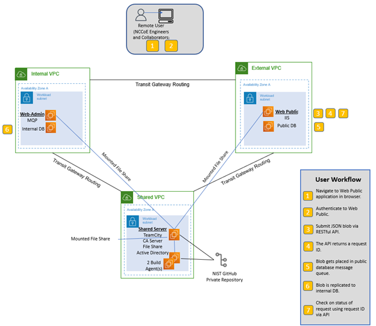
Figure 3 Legacy System End User Workflow#
WebPublic is publicly available for registered NVLAP users to submit their requests, which will include authentication requests that are partially handled by Microsoft IIS for Windows Server through mutual TLS (mTLS). Microsoft IIS receives its server-hosting certificate through the CA Server. The application stores and retrieves data from the Public DB as needed by the requests it receives. Any stored data is replicated to the Internal DB through the encrypted message queue (MQ). The MQP processes the request and stores necessary changes to the Internal DB, which is replicated to the Public DB for user retrieval. Logging occurs throughout the process, tracking the request and where the processing is in the WebPublic or MQP application. These logs are stored on a file share for access by a system administrator, along with database backups.
AWS Target Architecture by Service#
This section maps services in the baseline legacy infrastructure to equivalent services provided by AWS. Due to the CMVP system administrators’ familiarity with hosting environments in AWS, the research was focused on AWS-based solutions. While this document only addresses AWS services, equivalent services could be found in other cloud providers.
Table 11 provides the mapping between services used in the legacy ACMVP research environment and equivalent services offered by AWS. A more detailed explanation of the mappings can be found below. Explanations are provided for selected mapped services. Services in bold were modernized to equivalent versions, and services in italics were not selected for modernization.
Required Functionality |
Service In Legacy ACMVP |
AWS Equivalent Service(s) Considered |
AWS Selected Service(s) |
|---|---|---|---|
Database Service |
Microsoft SQL Server Database |
Amazon Relational Database Service (RDS) for SQL Server, Amazon Aurora, PostgreSQL |
Amazon RDS for SQL Server |
Database replication |
Microsoft SQL Server Replication |
AWS Database Migration Service (DMS) |
AWS DMS |
Code build/deployment |
JetBrains TeamCity |
AWS CodePipeline, AWS CodeBuild |
AWS CodePipeline and AWS CodeBuild |
Public Facing application |
WebPublic API server |
Containerized Application, Amazon Elastic Container Service (ECS), Amazon Elastic Kubernetes Service (EKS), Amazon Lambda |
Amazon ECS and Amazon EKS |
Internal application |
MessageQueueProcessor Internal server |
Containerized Application, Amazon ECS, Amazon EKS, Amazon Lambda, Amazon SQS, Amazon MQ |
Amazon ECS |
Web proxy/ authentication |
Microsoft IIS |
AWS Application Load Balancer (ALB), AWS Network Load Balancer (NLB), Amazon API Gateway, nginx Reverse Proxy |
AWS NLB |
Identity Management |
Microsoft Active Directory |
AWS Managed Microsoft AD |
Out of Scope |
Domain Name Services |
Microsoft Windows AD DS |
AWS Route 53 with AWS Managed Microsoft AD |
Out of Scope. |
File Sharing Services |
Windows File Share |
Amazon FXs for Windows, Amazon S3, AWS Storage Gateway |
Out of Scope. Note: S3 in use with other AWS services (RDS, Code Pipeline) but not specifically as an alternative to file shares |
Code Repository |
Git Repository |
AWS Code Commit (deprecated), AWS Code Connections |
Out of Scope. Note: AWS Code Connections is being used in conjunction with the existing Git Repository and is not replacing it. |
Equivalent AWS services for the Microsoft SQL Server Database are Amazon RDS for SQL Server, Amazon Aurora, and PostgreSQL. Amazon Aurora only supports MySQL and PostgreSQL, requiring a change from the ACMVP’s use of Microsoft SQL Server. Amazon RDS supports a managed version of Microsoft SQL Server. Amazon RDS was selected as the modernization approach due to the existing CMVP code that relies on Microsoft SQL Server.
AWS DMS was selected following the decision to use Amazon RDS to meet the need for data replication. Data replication in Amazon RDS requires AWS DMS, as the instances hosting the databases are managed by AWS and may change IP addresses over time. AWS manages this by providing DNS names to resolve the IP addresses for the databases.
JetBrains TeamCity’s equivalent service is mapped to AWS CodeBuild, which was used to provide insight to the CMVP on alternative technologies.
WebPublic had the potential to be containerized or moved to an Amazon Lambda function. The containerized option was selected as it enables local testing, integrates with GitHub, and allows for portability of the codebase. Note that streamlining the deployment process and improving code portability were desired outcomes of the production CMVP infrastructure support team. WebPublic was deployed via a Docker daemon on a NIST Secure Amazon EC2 instance to meet security requirements for a demo server, but Amazon ECS and Amazon EKS were examined as modernization approaches in the research environment. Amazon EKS was selected as the containerization platform offering increased portability and deployment ease.
The MQP was mapped to other MQ services. However, the developed MQP performs functions unique to the ACMVP application, resulting in a decision to containerize the application. AWS Fargate was selected as a technology to convert MQP capabilities to a standalone, containerized service and provide consolidated connection and deployment management.
Microsoft IIS was mapped to AWS NLB, AWS ALB, Amazon API Gateway, and nginx Reverse Proxy. The AWS NLB handles layer-3-requested routing to the application, requiring Microsoft IIS or nginx to process mTLS authentication, or Amazon API Gateway to process API keys as an alternative mode of authentication. The AWS ALB was examined as a way to handle both mTLS authentication and the routing to the containerized WebPublic application. The AWS ALB and other tools may still meet the requirements, but were not explored further.
While equivalent services were identified for GitHub, Microsoft Active Directory, Microsoft Windows AD DS, and File Share, these services were determined out of scope as they were already well established within the environment.
Key Modernization Components#
This section describes the modernization research journey of the ACMVP application, which is presented in three progressive iterations. As the application is a REST API with a backend database and MQP, similarly structured applications can utilize this research in making informed decisions to update, improve, or otherwise modernize their infrastructure.
In the first iteration, the application was containerized on Amazon ECS in a Windows container as a proof of concept. In the second iteration, the application was further decoupled and containerized as a Linux application on Amazon ECS to enable a CI/CD integration, which required Docker in Docker (the practice of running a Docker engine inside a Docker container) and is only supported on Linux. In the third and final iteration, the containerized Linux application was deployed on Amazon EKS, tailored for NIST production. Furthermore, the supporting infrastructure and application deployment were bundled as Infrastructure as Code (IaC) to streamline and automate deployment. Lastly, the final iteration features Amazon EKS with Bottlerocket Amazon Machine Images (AMIs), ensuring a FIPS 140-3 compliant environment.
Figures 4, 5, and 6 depict the three progressive modernization iterations. A pentagon flag in dark blue represents a timeline event, a green rectangle represents a Windows OS container development, a cyan hexagon represents a general modernization development, and an orange ellipse represents a Linux OS container development. Note that AWS CodeBuild and AWS CodePipeline CI/CD are in orange, as they only apply to Linux OS containers, as explained within the Application Deployment Modernization section. Purple ovals describe resources deployed by Terraform and IaC automation. Orange parallelograms represent deployments through AWS-managed services.
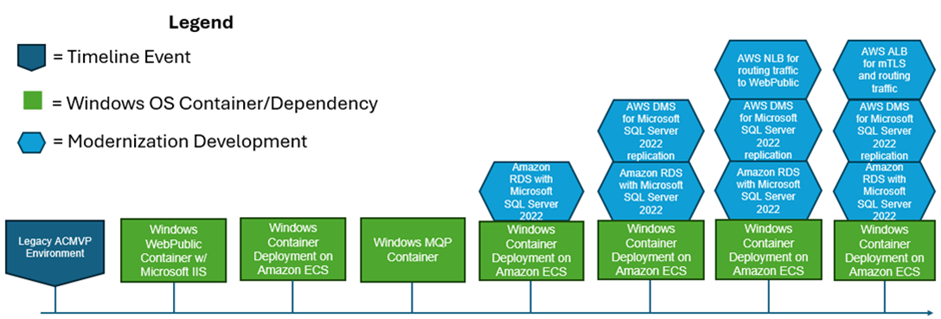
Figure 4 First iteration: Windows Container OS Modernization Progression on ECS#
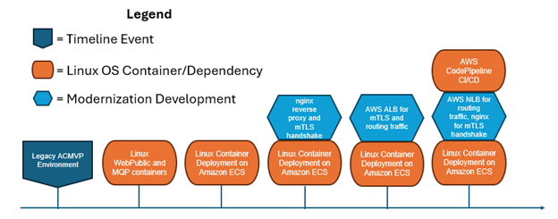
Figure 5 Second iteration: Linux Container OS Modernization Progression on ECS#
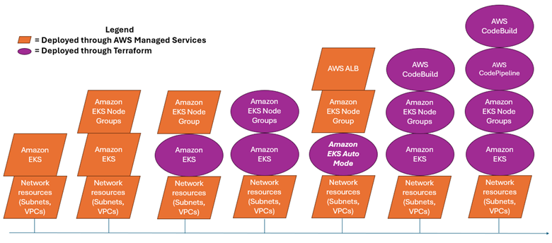
Figure 6 Third and final iteration: Deployment on EKS Auto Mode with FIPS 140-3 compliance enabled Progression of Experiments#
Figure 7 depicts the AWS services and tools used in the modernized system architecture. The CMVP services are appropriately divided into separate Amazon VPCs. The External Amazon VPC provides the outward-facing service layer (i.e., WebPublic and nginx), which is hosted on AWS EKS. External connectivity is enabled by an Amazon Elastic Load Balancer (ELB) instance. Additional infrastructure services consist of CI/CD automation provided by AWS CodeBuild, a single EC2 instance for management functions, and an external instance of Amazon RDS.
The Internal VPC provides RDS replication via AWS Database Migration Services (DMS) and the internally-hosted Amazon RDS instance. An EC2 instance provides infrastructure management for internal resources. Finally, the CMVP MQP service is hosted on Amazon ECS.
Figure 7 also depicts the AWS cloud-managed services that CMVP relies on for deployment and management of internal and external resources. Database backups, CI/CD artifacts, and data are hosted in Amazon S3. AWS CodePipeline and CodeBuild provide the CI/CD automation for internal and external resources. AWS Elastic Container Registry provides scalable, fault-tolerant storage for container images that provide WebPublic, MQP, and nginx functionality to the project.
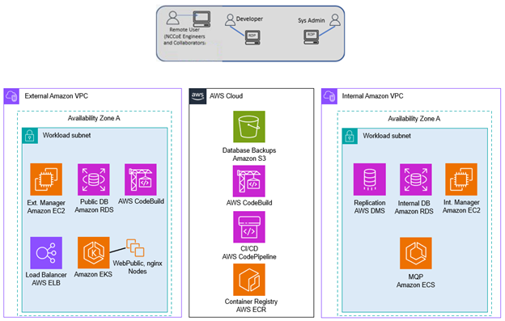
Figure 7 Modernized System Architecture#
Figure 8 depicts the desired client workflow through the modernized resources. The client connects to an AWS Elastic Load Balancer (ELB), whose destination is open to the public. AWS ELBs refer to both ALBs and NLBs, depending on the use case. The load balancer forwards the traffic to the WebPublic application, running through one of the launch types identified in the Application Deployment Modernization section. This application uses its connection to the Public Database to store the data passed through by the client. AWS DMS, residing in the Internal Amazon VPC, replicates that information to the Internal Database through the MessageQueue table. The MQP recognizes the new items in the queue and processes them, finishing its processing by storing updates back into the Internal Database. These updates are replicated back into the External Database through the AWS DMS instance. Once updates are populated into the External Database, clients can view those changes through their original connection workflow.
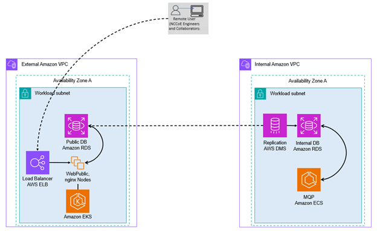
Figure 8 Modernized Client Workflow#
Figures 9 and 10 depict the different workflows the system administrator and the developer take to implement updates to the application code or database.
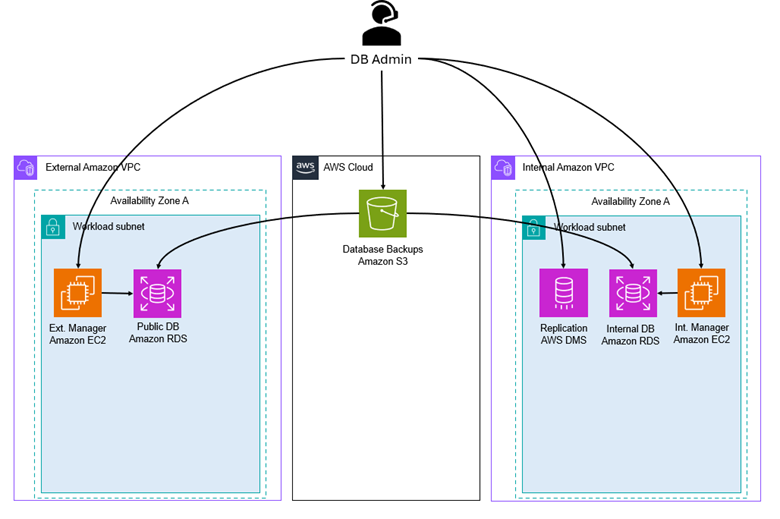
Figure 9 Modernized Database Administrator Workflow#
To make database changes, a developer would generate a backup of the database they would like to deploy in the modernized environment. This backup would be given to the system administrator, who would place the backup into a private Amazon S3 bucket. The system administrator can then connect to a database connector, where the backup can be retrieved from Amazon S3 and deployed into the Amazon RDS instance. This process requires AWS DMS replication to be reinitiated for the new set of desired tables.
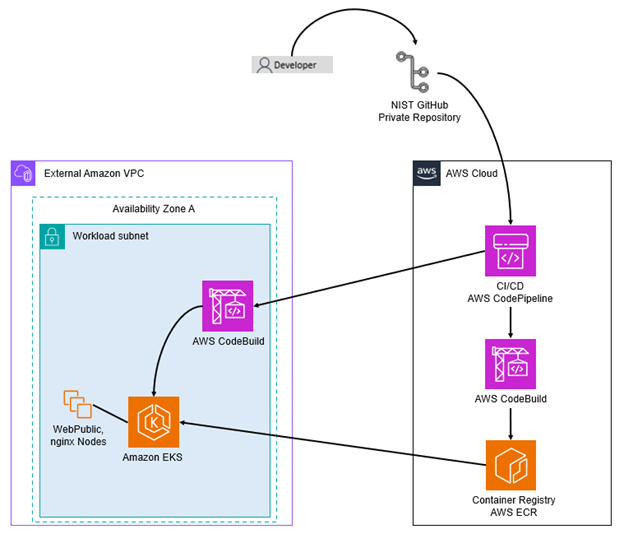
Figure 10 Modernized Developer Workflow#
To make code changes, a developer would push their changes to a code repository, like GitHub. From there, a container build is completed either locally by a system administrator or through the AWS CodeBuild/CodePipeline, where a container image is created and stored in the Amazon Elastic Container Registry (ECR). Once those changes are pushed, new tasks can be started (manually or automatically) with the updated application code.
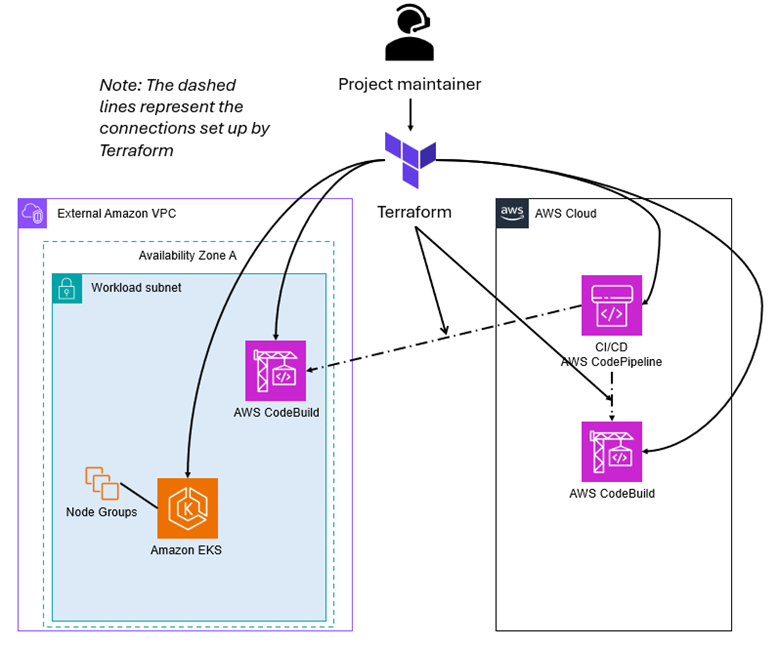
Figure 11 Modernized Project Maintainer Workflow#
Figure 12 below summarizes the modernized workflows in a swim lane diagram.
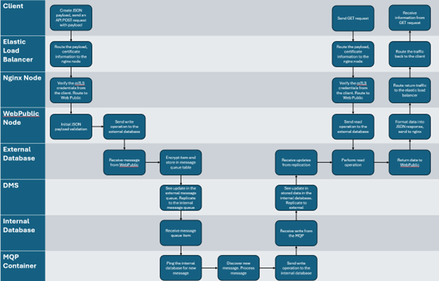
Figure 12 Modernized Architecture Swim Lane Diagram#
CI/CD Pipeline Modernization#
AWS CodeBuild and AWS CodePipeline are used to automate the continuous integration and deployment (CI/CD) process. The AWS CodePipeline creates a workflow that’s structured into multiple stages and ensures code tracking, containerized builds, artifact storage, and automated deployment of CMVP services.
Source Control & Change Detection – GitHub + AWS CodePipeline: AWS CodePipeline is integrated with GitHub, allowing it to automatically detect new code changes in the repository. When a developer pushes new code, AWS CodePipeline triggers the pipeline execution, automated build actions via AWS CodeBuild, automated deploy actions to Amazon EKS, or automated deploy actions to AWS CodeDeploy.
Build & Containerization – AWS CodeBuild + Amazon ECR: AWS CodeBuild is used to build Docker containers based on the latest code changes. The build process includes compiling, testing, and packaging the application into containerized images. These images are then tagged and stored securely in Amazon ECR for deployment.
AWS ECS Deployment & Orchestration – AWS CodeDeploy + Amazon ECS: AWS CodeDeploy handles the deployment of containerized applications into Amazon ECS. Amazon ECS ensures that the latest container versions are automatically deployed and scaled across available compute resources.
AWS EKS Deployment & Orchestration – AWS CodeBuild + Amazon EKS: AWS CodeBuild handles the automated deployment of Kubernetes services to AWS EKS. As with the Amazon ECS example, AWS EKS ensures that the latest container versions are automatically deployed to available compute resources.
Database Modernization#
Database modernization focuses on modernizing the hosting environment for the database service. The application requires an internal and external database with replication of data between the two to communicate updated information.
Amazon Relational Database Service (Amazon RDS): The Microsoft SQL Server 2019 edition in the ACMVP demo environment has been replaced with Amazon RDS for SQL Server 2022, with a standard license.
AWS Database Migration Service (AWS DMS): Microsoft SQL Server allows for native data replication in the legacy ACMVP research environment. However, the migration to Amazon RDS necessitates a new data replication service because the underlying resource hosting the database is not owned by the customer, but by AWS. AWS DMS maintains replication between the Amazon RDS databases.
Application Deployment Modernization#
The application deployment modernization focuses on containerizing the WebPublic and MQP applications. Utilizing containers provides benefits and options such as blue/green deployments, vulnerability scanning the images in a registry in advance of deployments, and shorter exposure times from routine deployments.
Figure 13 demonstrates the progression of the approaches taken to modernize the application into a container. The markers on the top represent the Microsoft Windows Container, while the markers on the bottom represent the Linux Container.
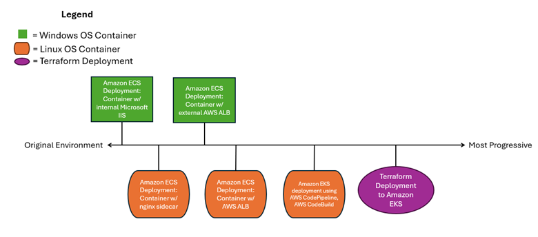
Figure 13 Application Modernization Progression#
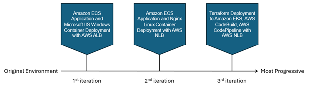
Figure 14 Progression of Containerization Builds#
The first iteration is the closest to the original ACMVP environment. It is a Microsoft Windows container on Amazon ECS that encapsulates both the application and the Microsoft IIS proxy to authenticate and route traffic. This solution containerizes the precise environment that exists in the WebPublic Amazon EC2 instance.
The AWS ALB lifts the proxy services into the cloud while performing the mTLS handshake. Client certificate details are passed at the application layer as headers to the application, which are then used for performing authentication for the application.
The second iteration is a Linux container on Amazon ECS with an nginx sidecar container. It advances the environment by offering a smaller container image size and proxy being utilized, and allows for the container or nginx to be modified without causing the other to be taken offline, decoupling the application.
The AWS NLB lifts the proxy services into cloud services. This approach allows AWS NLB to pass TLS traffic through to the containerized nginx/WebPublic to handle the mTLS handshake.
The third and final iteration applies the progress made in the first two to a NIST production-ready architecture. Kubernetes being the preferred containerization platform at NIST for production systems, the containerized CMVP application is deployed on Amazon Elastic Kubernetes Service (Amazon EKS). Furthermore, Amazon EKS is used with Bottlerocket AMIs to ensure a FIPS 140-3 compliant environment.
Details regarding the services explored can be found in Appendix D: Application Modernization.
Microservice Architecture#
The architecture’s final iteration marked a transition to the broad use of containers and microservice architecture solutions. Both software development and infrastructure management can account for the use of similar containerized services running lightweight versions of WebPublic, MQP, and nginx applications.
The software development support for this architecture can leverage locally hosted Kubernetes installations (i.e., Docker Desktop or Rancher Desktop). Both Docker Desktop and Rancher Desktop are commercial and open-source alternatives used for the development of containerized applications and microservices. Both solutions provide a localized Kubernetes cluster, APIs, compute, and storage resources. These solutions provide the software developers with similar provisioning and deployment patterns as well as APIs that provide an identical management plane when compared to production instances of the application.
Amazon EKS provides the cloud-hosted microservice architecture used in the final iteration of CMVP infrastructure modernization. Amazon EKS runs Kubernetes under the hood. The access patterns and APIs all behave in a similar fashion to other Kubernetes implementations, such as Docker Desktop or Rancher Desktop. Amazon EKS also provides access and configuration controls that can be managed through the Amazon Console or with Infrastructure as Code (IaC).
Infrastructure as Code (IaC)#
Automation and management of AWS resources, services, and infrastructure was a focus of the components referenced throughout the Research Infrastructure section. Infrastructure as Code (IaC) was selected to handle the standardization and automatic configuration of both AWS and CMVP components. Terraform was chosen as the IaC declarative configuration language (DCL) to represent these resources and components.
Terraform modules were used to decompose the CMVP application into groups of common resources. At the foundation, there is a first (e.g., root) module that dictates what groups of Terraform modules and top-level resources will represent a single deployment of the project’s infrastructure. Each module, when called, will deploy and configure resources that are tightly associated with one another. The following list describes the components that are called by the root module:
EKS Module: This consists of Amazon EKS cluster services and dependencies. This module also deploys Amazon EKS Node Groups, which serve as compute (i.e., Amazon EC2) instances that support applications deployed to an EKS cluster. Dependencies include security group and AWS ELB target group attachments that connect the EKS cluster to networks and load balancer capabilities.
CodeBuild Docker Module: This is the IaC that’s shared with the CodeBuild Deploy Module that is referenced later in this section. This module configures AWS CodeBuild services and dependencies. This includes attachments to existing AWS Identity and Access Management (IAM) roles that provide permissions to AWS CodeBuild and other AWS services and resources. This module also includes the build specification (i.e., buildspec) that scripts the actions that AWS CodeBuild performs as part of the Continuous Integration/Continuous Delivery (CI/CD) process.
CodeBuild Deploy Module: As previously stated, this module’s code is shared with the CodeBuild Docker Module. This module configures AWS CodeBuild projects and dependencies. Similar to CodeBuild Docker, this includes configuration of permissions via IAM role attachments as well as CI/CD build specifications. This CodeBuild module is configured to attach to the existing Amazon VPC where the Amazon EKS cluster and dependencies are deployed. This enables network access to Amazon VPC resources to support containerized deployments.
CodePipeline Module: This module handles the CI/CD orchestration of the AWS CodeBuild projects previously mentioned. AWS IAM roles are assigned to a single pipeline to permit access to the AWS services and resources that are required for CI/CD automation. CodePipeline is also configured to access specific source code branches of specific instances of the application (i.e., dev, test, or production) or isolated deployments used for testing purposes.